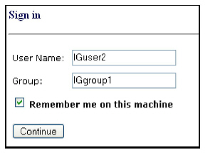

|
IdentityGuard Server 11.0 Administration Guide |
|
IdentityGuard Server 11.0 Administration Guide |
Machine authentication provides a way to allow rightful owners of a second factor authenticator to skip second-factor authentication when using devices from which they normally authenticate to resources protected by Entrust IdentityGuard.
When a user first registers a device, Entrust IdentityGuard stores detailed information about the device in the form of a machine secret. Later during machine authentication, Entrust IdentityGuard checks the user’s device against the stored machine secret. Successful device registration with Entrust IdentityGuard only occurs after the user has successfully responded to a second factor challenge. Later, during subsequent authentication requests, Entrust IdentityGuard checks the machine secret provided by the application against the list of machine secrets stored for the given user.
● If the stored machine secrets do not match, Entrust IdentityGuard could present the user with an additional authentication challenge or set the machine authentication test (part of risk-based authentication) to “fail”, depending on how you have configured your RBA policy. (For more information about risk-based tests, see Using risk-based authentication tests.)
● If a match exists, Entrust IdentityGuard either skips the challenge or sets the machine authentication risk-assessment test to “pass”, depending on how you have configured your client application.
This device registration process is performed for all devices a user wants to register. Registration can be as easy as having the user select a check box. The following illustration shows computer registration a Remember me on this machine option on a user login page.

During subsequent logins, the follow things happen:
● The client application retrieves or regenerates the machine secret transparently. (The machine secret library introduced with Entrust IdentityGuard 11.0 provides this capability.)
● Entrust IdentityGuard authenticates the machine secret, compares it to the one stored in the repository for that device.
● If a match exists, Entrust IdentityGuard updates the sequence nonce (if required by policy) and the client application writes the sequence nonce part of the machine secret back into persistent storage.
Note: If only the device fingerprint is being used, neither reading from nor writing to persistent storage is necessary. The device fingerprint is re-calculated each time it is presented to Entrust IdentityGuard.